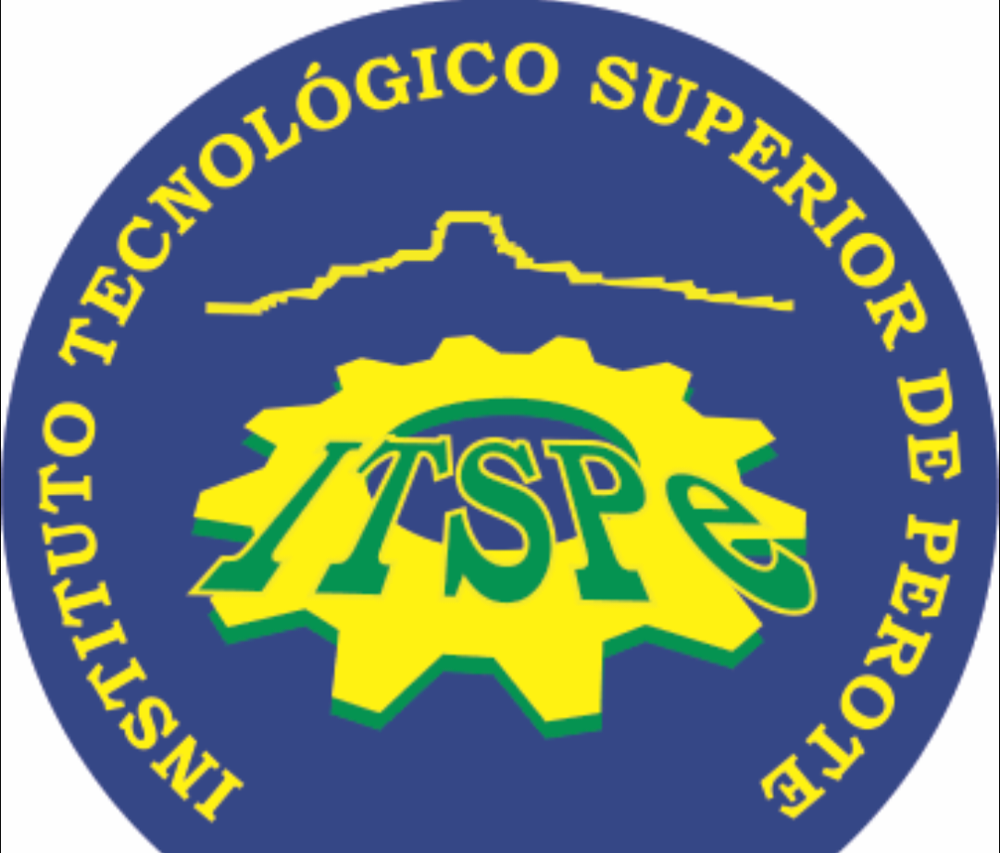

<
...
Marquesina negro
Párrafo con borde rojo
El Tecnológico Superior de Perote (ITSPerote) es una institución de educación superior en México, específicamente en el estado de Veracruz. Su objetivo principal es formar profesionales con valores y excelencia académica, además de generar conocimientos e innovación tecnológica para el desarrollo regional.
Tabla rojo y Gris
| correo |
Correo general: contacto@perote.tecnm.mx.
Dirección General: director@itsperote.edu.mx.
Unidad de Acceso a la Información: uaip.itspe@itsperote.edu.mx.
Otros correos: Puedes consultar el directorio del ITSP para encontrar el correo de otros departamentos |

Marquesina negro
| Ingenieria forestal |
Esta carrera se enfoca en la gestión, conservación y aprovechamiento sostenible de los recursos forestales. |
| Ingenieria en industria alimentaria |
Esta carrera se centra en la producción, transformación y conservación de alimentos, con un enfoque en la tecnología y la química. |
| Ingenieriaenenergias renovables |
Aunque no es directamente biológica, esta carrera tiene una relación indirecta, ya que se ocupa de la producción de energía a partir de fuentes renovables como la energía solar, eólica y biomasa. |